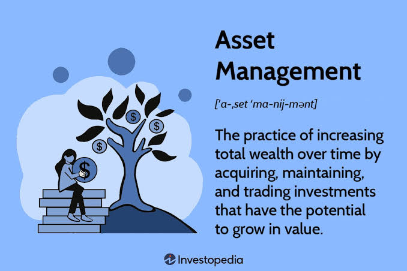

Asset Management (AM)
Understand institutional portfolio management, mutual funds, ETFs, asset allocation, and fiduciary stewardship.

Asset Management is a buy-side role where professionals manage investment portfolios on behalf of individuals (wealth management) and institutions (pension funds, endowments, foundations). Asset managers are fiduciaries—they act in the best interests of their clients.
The role requires a strong understanding of asset classes, investment strategies, and risk management. Asset managers must balance the competing goals of generating returns and managing risk.
Core Functions
Asset managers construct investment portfolios, conduct security selection, monitor performance, and manage risk in line with client objectives. They build diversified portfolios aligned with client goals and constraints.
The work involves researching securities, building portfolios, and monitoring market conditions. Asset managers must communicate clearly with clients and manage their expectations.
• Fiduciary Duty: Legally obligated to act solely in client best interest.
• Portfolio Construction: Security selection, diversification, and asset allocation.
• Performance & Risk Monitoring: Continuous market oversight and risk balancing.
Investment Philosophy
Asset Managers follow distinct investment philosophies, active management (beating the benchmark) or passive management (tracking the benchmark). Active managers seek to outperform the market through skilled security selection and market timing. Passive managers seek to match market returns by tracking an index.
Active management requires significant research and analysis, while passive management is more cost-efficient and predictable. Both approaches can be appropriate depending on the client's goals and beliefs about market efficiency.
• Active Management (Alpha): Outperforming index benchmarks via security selection & market timing.
• Passive Management (Beta): Tracking market indices (e.g., S&P 500 ETFs) with low expense ratios.
Career Progression
Research Analyst (2-4 years) → Portfolio Manager → Senior Portfolio Manager → Head of Asset Management.
Each level comes with increased responsibility for investment decisions, client relationships, and team management. Promotion is based on investment performance, the ability to generate consistent returns, and client management skills.
Most professionals who stay in asset management for the long term eventually become Heads of Asset Management, overseeing the firm's overall investment strategy and client relationships.
Research Analyst (2-4 yrs: Security & Sector Analysis) ➔ Portfolio Manager
(Portfolio Construction & Trading) ➔ Senior Portfolio Manager (Multi-Asset Mandates &
Key Clients) ➔ Head of Asset Management (Firm Strategy & Investment Leadership)
📝 Practice Quiz & Submodule Check
Complete all questions to unlock Submodule 4.7Answer the multiple-choice questions below to test your understanding of Asset Management concepts.